Collaborate
Table of Contents
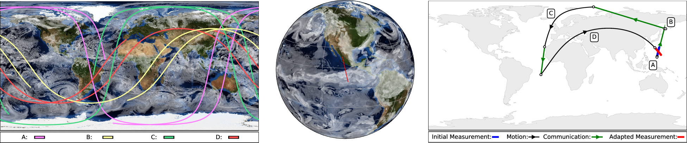
1 Introduction
1.1 Summary
- Collaborative Networks of Small Satellites will form future Earth-observing systems and enable New Observing Strategies.
- Observing systems will operate adaptive sensors with limited resources.
- (Restricted duty cycle, buffer size, power, bandwidth, link availability)
- Problem: maximizing measurement science value
- Challenge: complex decision-making space
- Solution: Autonomous resource management (power, comm., sensing)
- First Step: Software Tools for Modeling/Simulating Future Systems
1.2 Author
Ryan Linnabary - linnabary.24@osu.edu
1.3 Sponsor
NASA Advanced Information Systems Technology Program NNH16ZDA001N-AIST
1.4 Source Code & Documentation
The complete source code is available on Github. Complete Doxygen API documentation is available for the C++ Library and Python Tools. There is also a User Manual.
1.5 Applications
Collaborate is a software library and toolset for simulating collaborative autonomous small-satellite sensor networks.
- Optimize mission science return
- Predict optimal communication routes
- Produce data (telemetry, etc.) to train machine-learning models
- Constellation design
- Facilitate algorithm development
- Adaptive remote sensing
- Resource management
- Delay-tolerant networks
1.6 Publications
Ryan Linnabary, et. al., "Software Library for Simulation of Collaborative Sensor Networks for Navigation and Sensing", Consortium of Ohio Universities on Navigation and Timekeeping (COUNT), April 3 2019, Columbus, OH. [Abstract|Poster]
Ryan Linnabary, et. al., "Using Cognitive Communications to Increase the Operational Value of Collaborative Networks of Satellites", IEEE Cognitive Communications for Aerospace Applications Workshop (IEEE-CCAAW), June 26 2019, Cleveland, OH. [Paper|Slides]
Ryan Linnabary, et. al., "Open Source Software for Simulating Collaborative Networks of Autonomous Adaptive Sensors", in Proceedings of the IEEE International Geoscience and Remote Sensing Symposium (IGARSS) 2019, Yokahama, Japan. [Paper|Slides]
Ryan Linnabary, et. al., "Open Source Software for Simulating Collaborative Networks of Autonomous Adaptive Sensors", ElectroScience Laboratory Consortium on Electromagnetics and Radio Frequencies (ESL-CERF), August 5 2019, Columbus, OH. [Slide|Poster]
2 Work Flow
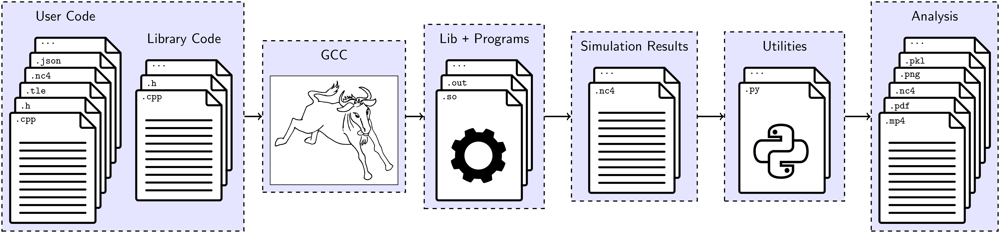
C++ programs use the library to produce simulation data. This data may be visualized or analyzed using the included Python scripts.
3 Development Environment
3.1 Option 1: Docker
Time: 12 min.
Note: Users can not currently open videos from the Docker command prompt (feature in progress).
Install git. Clone this repository in the home directory.
~ $ sudo apt install git ~ $ git clone https://github.com/linnabary/collaborate.git
Install Docker.
~ $ sudo apt install docker.io
Build the Docker image using the image build script.
~ $ sudo ./collaborate/env/docker/build.sh
Run the Docker container using the container run script.
~ $ sudo ./collaborate/env/docker/run.sh root@collaborate-test:~/collaborate#
3.2 Option 2: Local Machine
3.2.1 Disk Image
Time: 5 min.
Install wget and download Ubuntu 18.04.
~ $ sudo apt install wget ~ $ wget http://releases.ubuntu.com/18.04/ubuntu-18.04.2-desktop-amd64.iso
3.2.2 Installation
Option 2-A: Virtual Machine
Time: 30 min.
Install VirtualBox.
~ $ sudo apt install virtualbox
Run virtualbox and follow the on-screen instructions to boot and install the ISO. Use the following options:
- At least 15 GB disk space
- Minimal installation
- Download updates while installing
- Install third-party software
Option 2-B: Hard Drive
Time: 35 min.
Plug in and identify a target USB device.
~ $ lsblk
If your target device is located at /dev/sdb, then write the ISO to that
drive.
~ $ sudo umount /dev/sdb ~ $ sudo dd if=ubuntu-18.04.2-desktop-amd64.iso of=/dev/sdb
Reboot the computer. Boot from USB device. Follow instructions to install.
3.2.3 Dependencies
Time: 25 min.
Update everything. Install git. Clone this repository in the home directory.
~ $ sudo apt install update ~ $ sudo apt install upgrade ~ $ sudo apt install git ~ $ git clone https://github.com/linnabary/collaborate.git
Download C++ dependencies listed in apt.txt.
~ $ cat collaborate/env/local/apt.txt | xargs sudo apt install -y
Download Python3 dependencies listed in py.txt.
~ $ cat collaborate/env/local/py.txt | xargs sudo -H pip3 install ~ $ sudo -H install cartopy
Execute the following to set up the PYTHONPATH environment variable.
~ $ echo "export PYTHONPATH=\${PYTHONPATH}:\${HOME}/collaborate/util" >> .bashrc
~ $ source .bashrc
4 Build the Project
Time: 5 min.
The following project build script will build the project with CMake. If you set either of the variables CPPLINT, PYLINT, DOXYGEN to true, it will also check code style conformance and generate documentation.
~ $ cd collaborate ~/collaborate $ ./sys/build.sh
A build folder will appear at osse-build. If this folder is present the
next time the project build script is run, CMake will only build those files
which have been updated since the last run. Remove the folder osse-build
to completely rebuild the project (file names or folder names were changed).
In-between simulations, it may be useful to empty the directories output
and analysis so that new simulation results do not clobber the old ones.
The clean script accomplishes this, but does not prompt for confirmation.
~/collaborate $ ./sys/clean.sh
5 Condition the Input Data
Since the repository can not track large files, the input NetCDF data has been broken-up into smaller files. Run the combine script to merge these files together before running any example programs. This needs to be done only once.
~/collaborate $ util/combine.py
6 Command-Line Documentation
Time: 1 min.
6.1 PyDoc
Python modules are accessible using the program pydoc3.
~/collaborate $ pydoc3 plot_map
6.2 Python Help
Python script arguments can be referenced by passing -h or --help.
~/collaborate $ util/animate_data.py -h
7 Simple Example
Time: 2 min.
The simple simulation (source: simple.cpp) will produce simulation data in
the output folder.
~/collaborate $ ./simple.out ~/collaborate $ ls output antenna.nc4 data.nc4 events.txt network.nc4
If a NetCDF viewer is available (Panoply, etc.), open and explore the .nc4
files.
Also, Python scripts are provided in util for post-processing.
These scripts accept command-line arguments. Required arguments have default values, so the scripts can be run without passing any arguments.
By default, scripts produce files in the analysis directory without opening
a figure. Passing the argument -f to any Python script will open a Python
figure instead.
Note: The first time a Python script reads a .nc4 file, it is archived to
a .pkl file. Additional "runs" will access the .pkl file to save time.
Run the antenna plot script to view the dipole's gain pattern (passing -f
for an interactive 3D plot).
~/collaborate $ util/plot_antenna.py -f
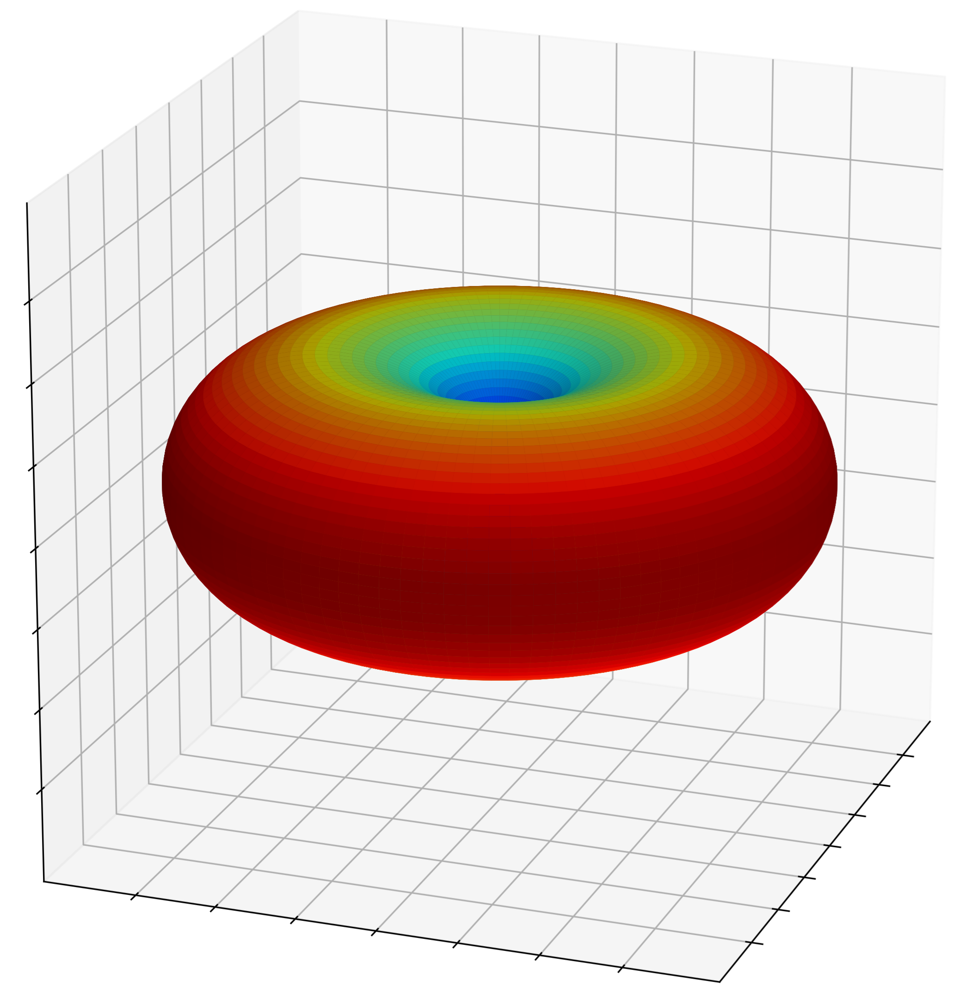
Run the series plot script to graph satellite parameters in time.
~/collaborate $ util/plot_series.py -f
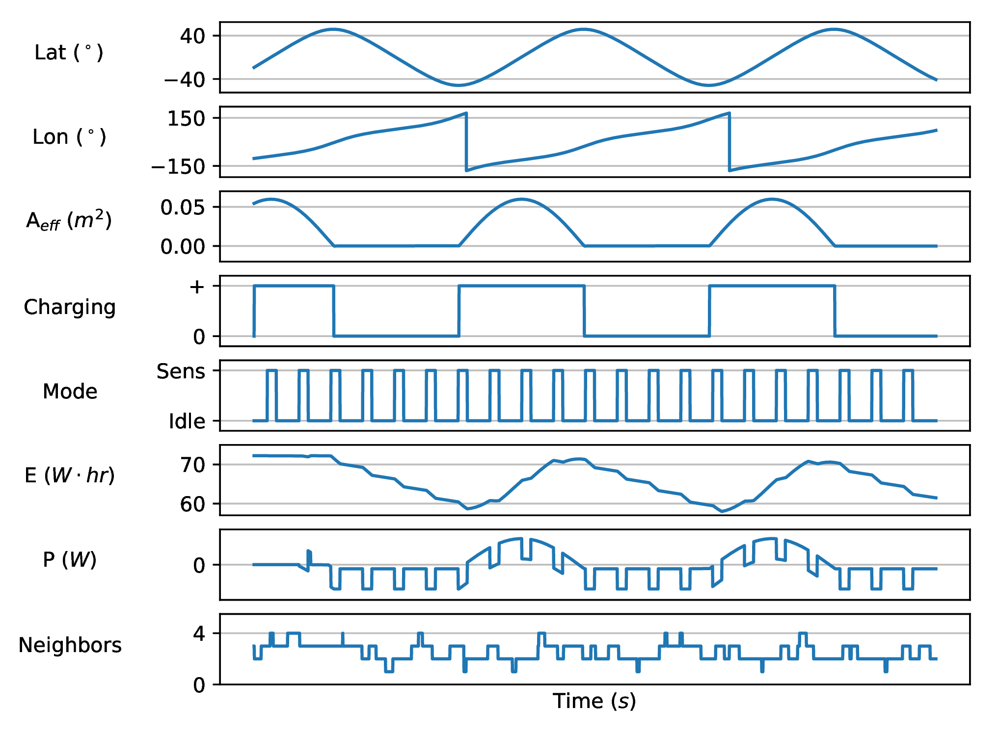
8 Intermediate Example
Time: 4 min.
Remove output and analysis files.
~/collaborate $ ./sys/clean.sh
The intermediate simulation (source: intermediate.cpp) will produce
simulation data in the output folder, including measurement logs.
~/collaborate $ ./intermediate.out ~/collaborate $ ls output 0000000649s_N00000_TAUTOT_measure.nc4 0000003284s_N00005_TAUTOT_measure.nc4 data.nc4 events.txt network.nc4
Run the map plot script to view the initial positions of the satellites
(passing -u to include the line-of-sight contact graph).
~/collaborate $ util/plot_map.py -u output/network.nc4 -f Processing log "output/data.nc4" Processing "output/network.nc4" Preparing equirectangular projection
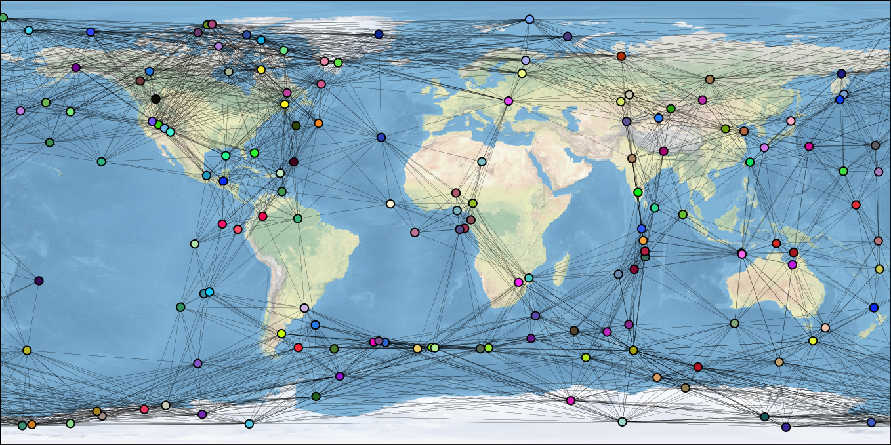
This contact graph can also be viewed as an image with the network plot script.
~/collaborate $ util/plot_network.py -f
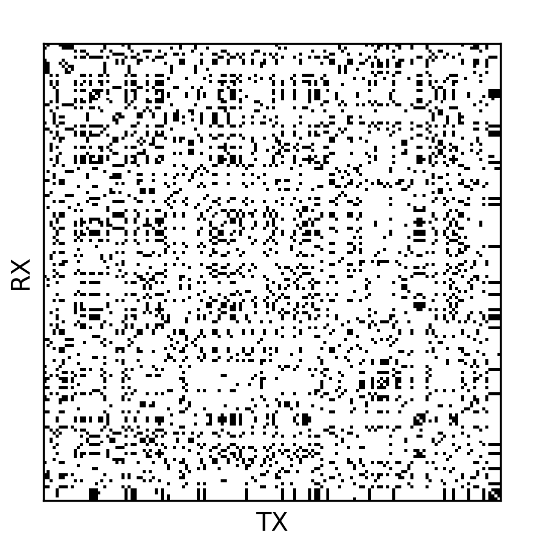
Use the network animation script to visualize instantaneous line-of-sight distances.
~/collaborate $ util/animate_network.py -i output/distance.nc4 -w -f
Run the map animation script to visualize satellite motion. This works best without opening a figure (writing to an MP4 file instead).
~/collaborate $ util/animate_map.py Processing archive "output/data.nc4" Preparing equirectangular projection Status: 99%
Run the data plot script with an additional argument to view the first frame
of "TAUTOT" + "PRECTOT" together.
~/collaborate $ util/plot_data.py -j input/nc4/ -f
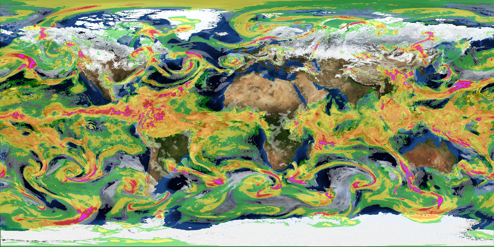
9 Advanced Example
Time: 20 min.
Remove output and analysis files.
~/collaborate $ ./sys/clean.sh
The advanced simulation (source: advanced.cpp) will produce simulation data
to the output folder, including measurement and communication logs..
~/collaborate $ ./advanced.out ~/git/collaborate $ ls -lSa output data.nc4 0000000459s_N65535_TAUTOT_measure.nc4 0000008994s_N65535_TAUTOT_measure.nc4 0000001326s_N00001_N00100_channel.nc4 0000008928s_N00034_N00002_channel.nc4 events.txt network.nc4 tree_0_47_7459.tex tree_3_165_5359.tex
Run the measurement plot script to plot a map and graph of a measurement.
These files are created in analysis unless otherwise specified.
~/collaborate $ util/plot_measurement.py
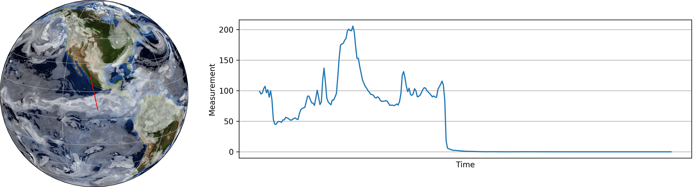
Low-level communication channel parameters can be plotted using the channel plot script.
~/collaborate $ util/plot_channel.py -f
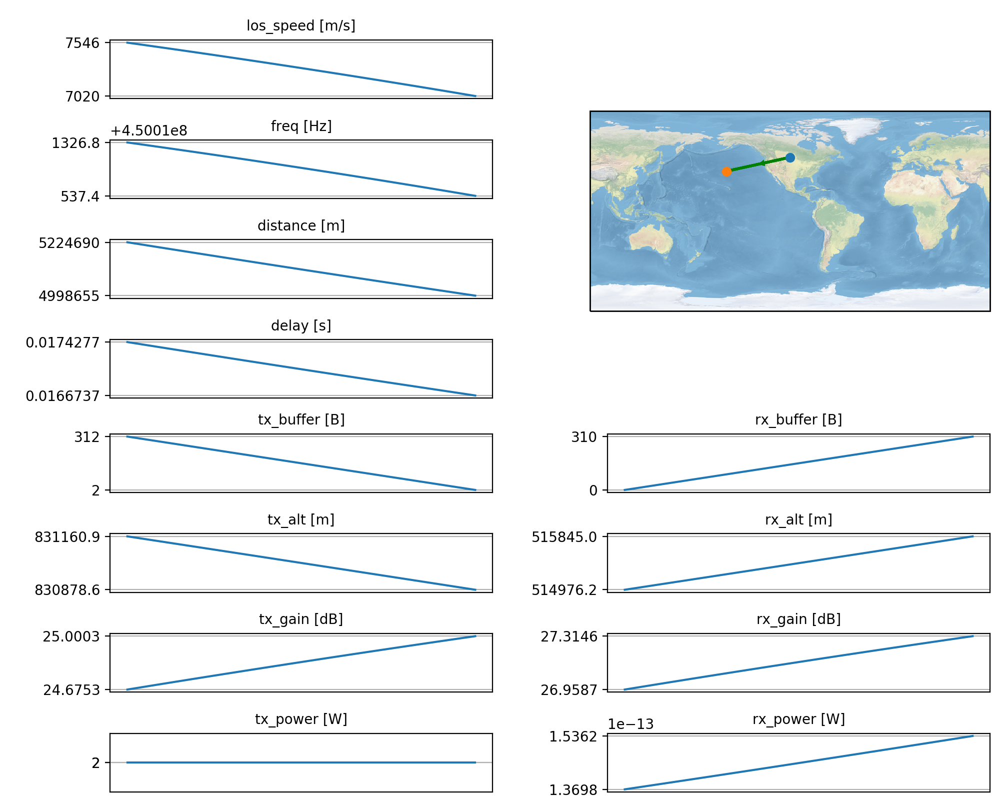
The data structures used to predict routes are logged as well. Open some of
these .tex files and select one that has an interesting structure. Use
LaTeX to generate a PDF plot.
~/collaborate $ cd output ~/collaborate/output $ pdflatex tree_3_165_5359.tex

10 Library Details
10.1 License
This project is licensed under LGPL v3.0 and contains code protected by other compatible free-software licenses.
| Directory | Language | License | Copyright | Author | Repository |
|---|---|---|---|---|---|
| libs/collaborate | C++ | LGPL v3.0 | Link | Ryan Linnabary | linnabary/collaborate |
| libs/sgp4 | C++ | Apache 2.0 | Link | Daniel Warner | dnwrnr/sgp4 |
| libs/spdlog | C++ | MIT | Link | Gabi Melman | gabime/spdlog |
| libs/nlohmann | C++ | MIT | Link | Niels Lohmann | nlohmann/json |
| libs/netcdf | C++ | UniData | Link | Unidata | unidata/netcdf-cxx4 |
| util | Python | LGPL v3.0 | Link | Ryan Linnabary | linnabary/collaborate |
10.2 Structure
The C++ library's class hierarchy provides an object-oriented system for observing system simulation experiments. The following illustration shows how the most prevalent abstract classes interact with, and depend on, one another.
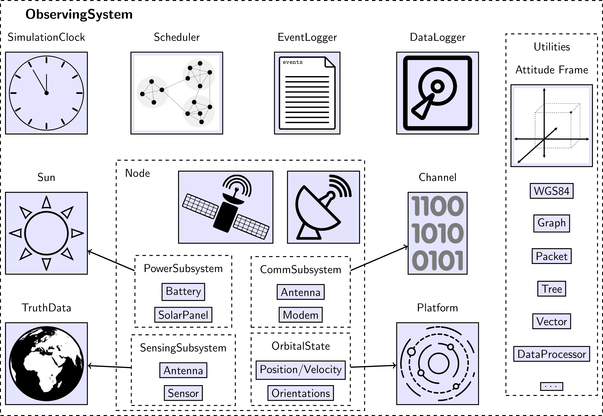
10.3 Profiling
The call-graph below was created with Valgrind (source: profile.sh). It shows the most common function calls (>5% CPU) for the program simple.cpp.
~/collaborate $ ./sys/profile.sh ./simple.out ~/collaborate $ ls -lSa callgrind* callgrind.out.10081 ~/collaborate $ kcachegrind callgrind.out.10081
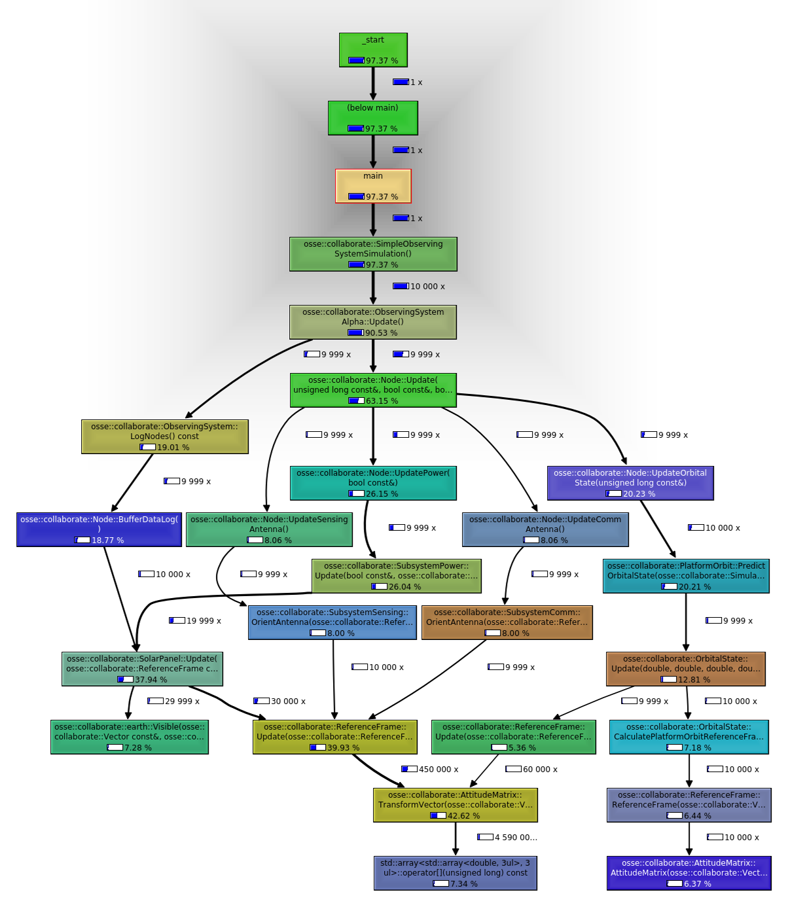
10.4 Testing
The Valgrind tool memcheck is used to evaluate memory behavior.
10.4.1 Simple Example
Testing memory behavior for simple.cpp:
./sys/memcheck.sh ./simple.out ==2119== Memcheck, a memory error detector ==2119== Copyright (C) 2002-2017, and GNU GPL'd, by Julian Seward et al. ==2119== Using Valgrind-3.13.0 and LibVEX; rerun with -h for copyright info ==2119== Command: ./simple.out ==2119== ==2119== ==2119== HEAP SUMMARY: ==2119== in use at exit: 97,579 bytes in 707 blocks ==2119== total heap usage: 44,701 allocs, 43,994 frees, 71,748,921 bytes allocated ==2119== ==2119== LEAK SUMMARY: ==2119== definitely lost: 0 bytes in 0 blocks ==2119== indirectly lost: 0 bytes in 0 blocks ==2119== possibly lost: 0 bytes in 0 blocks ==2119== still reachable: 97,579 bytes in 707 blocks ==2119== suppressed: 0 bytes in 0 blocks ==2119== Rerun with --leak-check=full to see details of leaked memory ==2119== ==2119== For counts of detected and suppressed errors, rerun with: -v ==2119== ERROR SUMMARY: 0 errors from 0 contexts (suppressed: 0 from 0)
10.4.2 Intermediate Example
Testing memory behavior for intermediate.cpp:
./sys/memcheck.sh ./intermediate.out ==1936== Memcheck, a memory error detector ==1936== Copyright (C) 2002-2017, and GNU GPL'd, by Julian Seward et al. ==1936== Using Valgrind-3.13.0 and LibVEX; rerun with -h for copyright info ==1936== Command: ./intermediate.out ==1936== ==1936== ==1936== HEAP SUMMARY: ==1936== in use at exit: 97,579 bytes in 707 blocks ==1936== total heap usage: 730,824 allocs, 730,117 frees, 643,571,312 bytes allocated ==1936== ==1936== LEAK SUMMARY: ==1936== definitely lost: 0 bytes in 0 blocks ==1936== indirectly lost: 0 bytes in 0 blocks ==1936== possibly lost: 0 bytes in 0 blocks ==1936== still reachable: 97,579 bytes in 707 blocks ==1936== suppressed: 0 bytes in 0 blocks ==1936== Rerun with --leak-check=full to see details of leaked memory ==1936== ==1936== For counts of detected and suppressed errors, rerun with: -v ==1936== ERROR SUMMARY: 0 errors from 0 contexts (suppressed: 0 from 0)
10.4.3 Advanced Example
Testing memory behavior for advanced.cpp:
./sys/memcheck.sh ./advanced.out ==2501== Memcheck, a memory error detector ==2501== Copyright (C) 2002-2017, and GNU GPL'd, by Julian Seward et al. ==2501== Using Valgrind-3.13.0 and LibVEX; rerun with -h for copyright info ==2501== Command: ./advanced.out ==2501== ==2501== ==2501== HEAP SUMMARY: ==2501== in use at exit: 97,579 bytes in 707 blocks ==2501== total heap usage: 1,021,227 allocs, 1,020,520 frees, 598,970,742 bytes allocated ==2501== ==2501== LEAK SUMMARY: ==2501== definitely lost: 0 bytes in 0 blocks ==2501== indirectly lost: 0 bytes in 0 blocks ==2501== possibly lost: 0 bytes in 0 blocks ==2501== still reachable: 97,579 bytes in 707 blocks ==2501== suppressed: 0 bytes in 0 blocks ==2501== Rerun with --leak-check=full to see details of leaked memory ==2501== ==2501== For counts of detected and suppressed errors, rerun with: -v ==2501== ERROR SUMMARY: 0 errors from 0 contexts (suppressed: 0 from 0)
10.5 Development Tools
The following software tools were used in the creation of this project.
| Tool | Version | Links | License |
|---|---|---|---|
| Docker / Moby | 18.09.7 | repository / webpage | Apache 2.0 |
| pdfTeX | 3.14159265 | repository / webpage | GPLv3 |
| Doxygen | 1.8.13 | repository / webpage | GPLv2 |
| GraphViz | 2.40.1-2 | repository / webpage | Common Public License V1.0 |
| Valgrind | 3.13.0 | repository / webpage | GPLv2 |
| kCacheGrind | 0.8.0 | repository / webpage | GPLv2 |
| netCDF4 | 1.5.1.2 | repository / webpage | UniData |
| SciPy | 1.3.0 | repository / webpage | BSD |
| Cartopy | 0.17.0 | repository / webpage | GPLv3 |
| PyLint | 2.3.1 | repository / webpage | GPLv2 |
| CppLint | 1.4.4 | repository / webpage | |
| Python | 3.6.8 | repository / webpage | PSF |
| CMake | 3.10.2 | repository / webpage | BSD |
| FFMpeg | 3.4.6 | repository / webpage | LGPLv2.1 |
| Emacs | 26.2 | repository / webpage | GPLv3 |